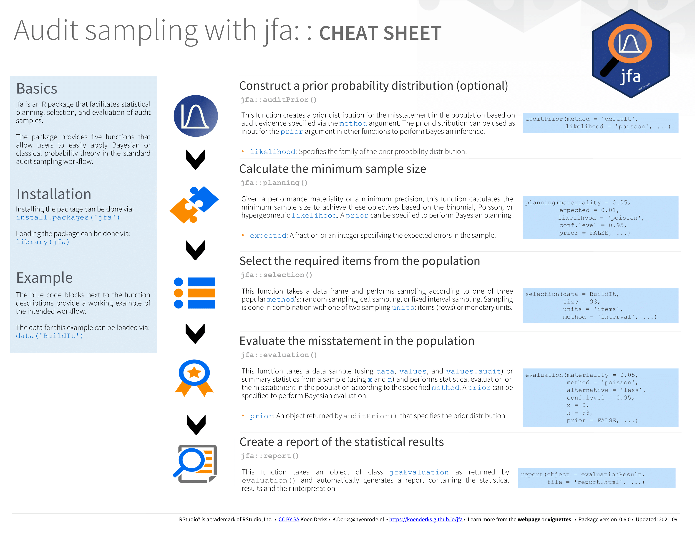

Audit sampling: Get started
Koen Derks
2023-10-17
Source:vignettes/audit-sampling.Rmd
audit-sampling.RmdIntroduction
Welcome to the ‘Audit sampling’ vignette of the jfa package. Here you can find a detailed explanation of the functions in the package that facilitate the statistical audit sampling workflow. Specifically, these functions implement standard audit sampling techniques to calculate sample sizes, select items from a population, and evaluate misstatement in a data sample. The jfa package enables users to create a prior probability distribution to perform Bayesian audit sampling using these functions. For more detailed explanations of each function, read the other vignettes on the package website.
Cheat sheet
The cheat sheet below will help you get started with
jfa’s’ intended audit sampling workflow. You can
download a pdf version of the cheat sheet here.

Functions and intended usage
Below you can find an explanation of the available functions in jfa sorted by their occurrence in the standard audit sampling workflow.
Create a prior distribution with auditPrior()

The auditPrior() function is used to specify a prior
distribution for Bayesian audit sampling. The interface allows a
complete customization of the prior distribution as well as a formal
translation of pre-existing audit information into a prior distribution.
The function returns an object of class jfaPrior which can
be used with associated summary() and plot()
methods. Objects with class jfaPrior can also be used as
input for the prior argument in other functions. Moreover,
jfaPrior objects have a corresponding
predict() function to produce the predictions of the prior
distribution on the data level.
Full function with default arguments:
auditPrior(
method = c(
"default", "strict", "param", "impartial", "hyp",
"arm", "bram", "sample", "factor", "nonparam"
),
likelihood = c(
"poisson", "binomial", "hypergeometric",
"normal", "uniform", "cauchy", "t", "chisq",
"exponential"
),
N.units = NULL,
alpha = NULL,
beta = NULL,
materiality = NULL,
expected = 0,
ir = NULL,
cr = NULL,
ub = NULL,
p.hmin = NULL,
x = NULL,
n = NULL,
factor = NULL,
samples = NULL,
conf.level = 0.95
)Supported options for the method argument:
-
default: Indifferent / noninformative prior distribution. -
param: Manually set the prior parameters. -
strict: Improper prior distribution (matches classical results). -
impartial: Impartial prior distribution (Derks et al., 2022). -
hyp: Manually provide the prior probability for tolerable misstatement (Derks et al., 2021). -
arm: Manually provide the inherent risk and internal control risk (Derks et al., 2021). -
bram: Manually provide the upper bound of the prior distribution (Touw & Hoogduin, 2011). -
sample: Manually provide an equivalent prior sample (Derks et al., 2021). -
factor: Manually provide and weigh an equivalent prior sample (Derks et al., 2021). -
nonparam: Nonparametric prior based on samples.
Supported options for the likelihood
argument:
-
poisson: Poisson likelihood and conjugate gamma prior distribution (Stewart, 2013). -
binomial: Binomial likelihood and conjugate beta prior distribution (Steele, 1992). -
hypergeometric: Hypergeometric likelihood and conjugate beta-binomial prior distribution (Dyer & Pierce, 1991). -
normal: Normal prior distribution. -
uniform: Uniform prior distribution. -
cauchy: Cauchy prior distribution. -
t: Student-t prior distribution. -
chisq: Chi-squared prior distribution. -
exponential: Exponential prior distribution.
Example usage:
# Default beta(1, 1) prior distribution
x <- auditPrior(method = "default", likelihood = "binomial")
# Custom gamma(1, 10) prior distribution
x <- auditPrior(method = "param", likelihood = "poisson", alpha = 1, beta = 10)
# Beta prior distribution incorporating inherent risk (70%) and control risk (50%)
x <- auditPrior(method = "arm", likelihood = "binomial", materiality = 0.05, ir = 0.7, cr = 0.5)
summary(x) # Prints information about the prior distribution##
## Prior Distribution Summary
##
## Options:
## Likelihood: binomial
## Specifics: ir = 0.7; cr = 0.5; dr = 0.1428571
##
## Results:
## Functional form: beta(α = 1, β = 21)
## Mode: 0
## Mean: 0.045455
## Median: 0.032468
## Variance: 0.0018865
## Skewness: 1.7442
## Information entropy (nat): -2.0921
## 95 percent upper bound: 0.13295
## Precision: 0.13295
predict(x, n = 20, cumulative = TRUE) # Predictions for a sample of n = 20## x<=0 x<=1 x<=2 x<=3 x<=4 x<=5 x<=6 x<=7
## 0.5121951 0.7682927 0.8930582 0.9521576 0.9793114 0.9913797 0.9965519 0.9986816
## x<=8 x<=9 x<=10 x<=11 x<=12 x<=13 x<=14 x<=15
## 0.9995206 0.9998352 0.9999468 0.9999841 0.9999956 0.9999989 0.9999998 1.0000000
## x<=16 x<=17 x<=18 x<=19 x<=20
## 1.0000000 1.0000000 1.0000000 1.0000000 1.0000000Plan a sample with planning()

The planning() function is used to calculate a minimum
sample size for audit samples. It allows specification of statistical
requirements for the sample with respect to the performance materiality
or the precision. The function returns an object of class
jfaPlanning which can be used with associated
summary() and plot() methods. To perform
Bayesian planning, the input for the prior argument can be
an object of class jfaPrior as returned by the
auditPrior() function, or an object of class
jfaPosterior as returned by the evaluation()
function.
Full function with default arguments:
planning(
materiality = NULL,
min.precision = NULL,
expected = 0,
likelihood = c("poisson", "binomial", "hypergeometric"),
conf.level = 0.95,
N.units = NULL,
by = 1,
max = 5000,
prior = FALSE
)Supported options for the likelihood
argument:
-
poisson: Poisson likelihood (Stewart, 2012). -
binomial: Binomial likelihood (Stewart, 2012). -
hypergeometric: Hypergeometric likelihood (Stewart, 2012).
Example usage:
# Classical planning using the Poisson likelihood
x <- planning(materiality = 0.03, likelihood = "poisson")
# Bayesian planning using a default beta(1, 1) prior and binomial likelihood
x <- planning(materiality = 0.03, likelihood = "binomial", prior = TRUE)
# Bayesian planning using a custom beta(1, 10) prior and binomial likelihood
x <- planning(
materiality = 0.03,
prior = auditPrior(method = "param", likelihood = "binomial", alpha = 1, beta = 10)
)
summary(x) # Prints information about the planning##
## Bayesian Audit Sample Planning Summary
##
## Options:
## Confidence level: 0.95
## Materiality: 0.03
## Hypotheses: H₀: Θ > 0.03 vs. H₁: Θ < 0.03
## Expected: 0
## Likelihood: binomial
## Prior distribution: beta(α = 1, β = 10)
##
## Results:
## Minimum sample size: 89
## Tolerable errors: 0
## Posterior distribution: beta(α = 1, β = 99)
## Expected most likely error: 0
## Expected upper bound: 0.029807
## Expected precision: 0.029807
## Expected BF₁₀: 54.479Select sample items with selection()

The selection() function is used to perform statistical
selection of audit samples. It offers flexible implementations of the
most common audit sampling algorithms for attributes sampling and
monetary unit sampling. The function returns an object of class
jfaSelection which can be used with associated
summary() and plot() methods. The input for
the size argument can be an object of class
jfaPlanning as returned by the planning()
function.
Full function with default arguments:
selection(
data,
size,
units = c("items", "values"),
method = c("interval", "cell", "random", "sieve"),
values = NULL,
order = NULL,
decreasing = FALSE,
randomize = FALSE,
replace = FALSE,
start = 1
)Supported options for the units argument:
-
items: Sampling units are items (rows) (Leslie, Teitlebaum, & Anderson, 1979). -
values: Sampling units are monetary units (Leslie, Teitlebaum, & Anderson, 1979).
Supported options for the method argument:
-
interval: Select a fixed unit from each interval. -
cell: Select a random unit within each interval. -
random: Select random units without an interval. -
sieve: Select units using modified sieve sampling (Hoogduin, Hall, & Tsay, 2010).
Example usage:
# Selection using random record (attributes) sampling
x <- selection(data = BuildIt, size = 100, units = "items", method = "random")
# Selection using fixed interval monetary unit sampling (using column 'bookValue' in BuildIt)
x <- selection(
data = BuildIt, size = 100, units = "values",
method = "interval", values = "bookValue"
)
summary(x) # Prints information about the selection##
## Audit Sample Selection Summary
##
## Options:
## Requested sample size: 100
## Sampling units: monetary units
## Method: fixed interval sampling
## Starting point: 1
##
## Data:
## Population size: 3500
## Population value: 1403221
## Selection interval: 14032
##
## Results:
## Selected sampling units: 100
## Proportion of value: 0.037014
## Selected items: 100
## Proportion of size: 0.028571Evaluate a sample with evaluation()

The evaluation() function takes a sample or summary
statistics of the sample and performs evaluation according to the
specified method and sampling objectives. The function returns an object
of class jfaEvalution which can be used with associated
summary() and plot() methods. To perform
Bayesian evaluation, the input for the prior argument can
be an object of class jfaPrior as returned by the
auditPrior() function, or an object of class
jfaPosterior as returned by the evaluation()
function.
Full function with default arguments:
evaluation(
materiality = NULL,
method = c(
"poisson", "binomial", "hypergeometric",
"stringer.poisson", "stringer.binomial", "stringer.hypergeometric",
"stringer.meikle", "stringer.lta", "stringer.pvz",
"rohrbach", "moment", "coxsnell", "mpu",
"direct", "difference", "quotient", "regression"
),
alternative = c("less", "two.sided", "greater"),
conf.level = 0.95,
data = NULL,
values = NULL,
values.audit = NULL,
strata = NULL,
times = NULL,
x = NULL,
n = NULL,
N.units = NULL,
N.items = NULL,
pooling = c("none", "complete", "partial"),
prior = FALSE
)Supported options for the method argument:
-
poisson: Poisson likelihood (Stewart, 2012). -
binomial: Binomial likelihood (Stewart, 2012). -
hypergeometric: Hypergeometric likelihood (Stewart, 2012). -
stringer.poisson: Stringer bound using Poisson distribution (Touw & Hoogduin, 2011). -
stringer.binomial: Stringer bound using binomial distribution (Bickel, 1992). -
stringer.hypergeometric: Stringer bound using hypergeometric distribution. -
stringer.meikle: Stringer bound with Meikle’s correction (Meikle, 1972). -
stringer.lta: Stringer bound with LTA correction (Leslie, Teitlebaum, & Anderson, 1979). -
stringer.pvz: Modified Stringer bound (Pap & van Zuijlen, 1996). -
rohrbach: Rohrbach’s augmented variance estimator (Rohrbach, 1993). -
moment: Modified moment bound (Dworin & Grimlund, 1984). -
coxsnell: Cox and Snell bound (Cox & Snell, 1979). -
mpu: Mean-per-unit estimator (Touw & Hoogduin, 2011). -
direct: Direct estimator (Touw & Hoogduin, 2011). -
difference: Difference estimator (Touw & Hoogduin, 2011). -
quotient: Quotient (ratio) estimator (Touw & Hoogduin, 2011). -
regression: Regression estimator (Touw & Hoogduin, 2011).
Example usage:
# Classical evaluation using the Poisson likelihood (and summary statistics)
x <- evaluation(materiality = 0.03, x = 1, n = 100, method = "poisson")
# Bayesian evaluation using a default minimal information prior (and summary statistics)
x <- evaluation(materiality = 0.03, x = 1, n = 100, method = "poisson", prior = TRUE)
# Bayesian evaluation using a custom beta(1, 10) prior (and summary statistics)
x <- evaluation(
materiality = 0.03, x = 1, n = 100,
prior = auditPrior(method = "param", likelihood = "binomial", alpha = 1, beta = 10)
)
summary(x) # Prints information about the evaluation##
## Bayesian Audit Sample Evaluation Summary
##
## Options:
## Confidence level: 0.95
## Materiality: 0.03
## Hypotheses: H₀: Θ > 0.03 vs. H₁: Θ < 0.03
## Method: binomial
## Prior distribution: beta(α = 1, β = 10)
##
## Data:
## Sample size: 100
## Number of errors: 1
## Sum of taints: 1
##
## Results:
## Posterior distribution: beta(α = 2, β = 109)
## Most likely error: 0.0091743
## 95 percent credible interval: [0, 0.042399]
## Precision: 0.033225
## BF₁₀: 15.385Create a report with report()

The report() function takes an object of class
jfaEvaluation as returned by the evaluation()
function and automatically creates a html or
pdf report containing the analysis results and their
interpretation.
Full function with default arguments:
Example usage:
# Generate an automatic report
report(object = x, file = 'myReport.html')For an example report, see the following link.
Benchmarks
To validate the statistical results, jfa’s automated unit tests regularly verify the main output from the package against the following benchmarks:
- Audit Sampling: Audit Guide (Appendix A and Appendix C)
- AuditSampler
- EZ-quant
- MUS (R package version 0.1.6)
- samplingbook (R package version 1.2.4)
- SMASH21 + SMASH21-Bayes
- SRA
- Touw, P., and Hoogduin, L. (2011). Statistiek voor audit en controlling. Boom uitgevers, Amsterdam.
Statistical tables
Below you can find several informative tables that contain
statistical sample sizes, upper limits, one-sided p values, and
Bayes factors. These tables are created using the
planning() and evaluation() functions provided
in the package.
Sample sizes
- Sample sizes based on the Poisson distribution
- Sample sizes based on the binomial distribution
- Sample sizes based on the hypergeometric distribution
Upper limits
- Upper limits based on the Poisson distribution
- Upper limits based on the binomial distribution
- Upper limits based on the hypergeometric distribution
One-sided p values
- One-sided p values based on the Poisson distribution
- One-sided p values based on the binomial distribution
- One-sided p values based on the hypergeometric distribution
Bayes factors
References
- Bickel, P. J. (1992). Inference and auditing: The Stringer bound. International Statistical Review, 60(2), 197-209. - View online
- Cox, D. R., & Snell, E. J. (1979). On sampling and the estimation of rare errors. Biometrika, 66(1), 125-132. - View online
- Derks, K., de Swart, J., van Batenburg, P., Wagenmakers, E.-J., & Wetzels, R. (2021). Priors in a Bayesian audit: How integration of existing information into the prior distribution can improve audit transparency and efficiency. International Journal of Auditing, 25(3), 621-636. - View online
- Derks, K., de Swart, J., Wagenmakers, E.-J., & Wetzels, R. (2021). The Bayesian Approach to Audit Evidence: Quantifying Statistical Evidence using the Bayes Factor. PsyArXiv - View online
- Derks, K., de Swart. J., Wagenmakers, E.-J., Wille, J., & Wetzels, R. (2021). JASP for Audit: Bayesian Tools for the Auditing Practice. Journal of Open Source Software, 6(68), 2733. - View online
- Derks, K., de Swart, J., Wagenmakers, E.-J., & Wetzels, R. (2022). An Impartial Bayesian Hypothesis Test for Audit Sampling. PsyArXiv - View online
- Derks, K., de Swart, J., Wagenmakers, E.-J., & Wetzels, R. (2022). Bayesian Generalized Linear Modeling: How to Incorporate Audit Information into the Statistical Model. PsyArXiv - View online
- Dworin, L. D. and Grimlund, R. A. (1984). Dollar-unit sampling for accounts receivable and inventory. The Accounting Review, 59(2), 218-241. - View online
- Dyer, D., & Pierce, R. L. (1993). On the choice of the prior distribution in hypergeometric sampling. Communications in Statistics - Theory and Methods, 22(8), 2125-2146. - View online
- Hoogduin, L. A., Hall, T. W., & Tsay, J. J. (2010). Modified sieve sampling: A method for single-and multi-stage probability-proportional-to-size sampling. Auditing: A Journal of Practice & Theory, 29(1), 125-148. - View online
- International Auditing and Assurance Standards Board (IAASB). (2018). Handbook of international quality control, auditing review, other assurance, and related services pronouncements (Vol. I). New York: International Federation of Accountants.
- Meikle, G. R. (1972). Statistical Sampling in an Audit Context. Canadian Institute of Chartered Accountants.
- Leslie, D. A., Teitlebaum, A. D., & Anderson, R. J. (1979). Dollar-unit Sampling: A Practical Guide for Auditors. London: Pitman.
- Pap, G., & van Zuijlen, M. C. (1996). On the asymptotic behaviour of the Stringer bound. Statistica Neerlandica, 50(3), 367-389. - View online
- Rietveld, C. (1978). De zeefmethode als selectiemethode voor statistische steekproeven in de controlepraktijk (1). Compact: Computer en Accountant, 15, 2-11.
- Rohrbach, K. J. (1993). Variance augmentation to achieve nominal coverage probability in sampling from audit populations. Auditing: A Journal of Practice & Theory, 12(2), 79-97.
- Steele, A. (1992). Audit Risk and Audit Evidence: The Bayesian Approach to Statistical Auditing. San Diego: Academic Press.
- Stewart, T. R. (2012). Technical Notes on the AICPA Audit Guide Audit Sampling. American Institute of Certified Public Accountants, New York. - View online
- Stewart, T. R. (2013). A Bayesian Audit Assurance Model with Application to the Component Materiality problem in Group Audits. VU University, Amsterdam. - View online
- Talens, E. (2005). Statistical Auditing and the AOQL-method. University of Groningen, Groningen. - View online
- Touw, P., and Hoogduin, L. (2011). Statistiek voor Audit en Controlling. Boom uitgevers, Amsterdam.
- Weiler, H. (1965). The use of incomplete beta functions for prior distributions in binomial sampling. Technometrics, 7(3), 335-347. - View online